Documentatia proiectului "Tea H(TTP)ouse"
Unitate de invatamant: Facultatea de Informatica Iasi
Universitatea Alexandra Ioan Cuza, Iasi
Componenta echipei:
Bazic Catalina, 2B3
Cojocarescu Bianca Ioana, 2B2
Frij Alexandra-Stefania, 2B2
Introducere
Articolul contine informatii cu privire la principalele specificatii la aplicatiei, procesul de interactiune a clientului cu aceasta precum si procesul de realizare a interfetei.
Proiectul a fost dezvoltat in cadrul cursului de "Tehnologii Web" din anul 2 al Facultatii de Informatica.
Scopul aplicatiei
Aplicatia are rolul de a simula o ceainarie dedicata studentilor informaticieni.
Clientii vor avea posibilitatea de a achizitiona online diverse bauturi precum ceaiuri sau sucuri, insotite aditional de gustari. Acestora li se ofera posibilitatea de a-si rezerva un loc in ceainarie, consulta meniu, achizitiona produsele dorite. De asemenea, cu scopul recrearii, clientii pot participa la diverse evenimente organizate in cadrul ceainariei.
Obiectivul nostru
Proiectul Tea H(TTP)ouse se adreseaza studentilor informaticieni si nu numai, vizand orice persoana iubitoare de ceai, momente linistite sau gustari dulci in pauzele dintre cursuri. Ne indreptam, astfel, atentia asupra unui public cat mai larg, indiferent de varsta si ocupatie.
Principalele noastre obiective pentru aplicatie sunt:
Oferirea unei game cat mai variante de ceaiuri, cafea sau bauturi reci precum sucuri din fructe sau smoothie, dand posibilitatea unui grup cat mai mare de persoane sa foloseasca aplicatia. Gandindu-ne la a atrage cat mai multi utilizatori, varietatii de bauturi ii este atribuita si o categorie de gustari, potrivite oricarui ceai.
Posibilitatea de self check-out, clientii evitand astfel cozile infernale.
Oferirea momentelor de recreere, evenimente precum concerte live, ateliere practice, activitati de grup avand scopul de a destinde atmosfera.
Crearea unui spatiu primitor, potrivit pauzelor scurte.
Posibilitatea de rezervare online a unui loc in ceainarie, totodata oferind si posibilitatea de a consulta o lista cu locurile existente si libere.
User Interface
Interfata aplicatiei este una simpla, minimalista, fiind usor de navigat.
Procesul de design
Prototipul initial al aplicatiei surprinde existenta unei bare de navigare in partea superioara a paginii ce contine numele fiecarei pagini apartinand aplicatiei. Prin click pe numele uneia dintre pagini, pagina curenta se muta catre aceasta. Un alt sketch al aplicatiei surpinde si existenta unui footer cu informatii despre programul ceainariei, contact .
Paleta de culoare aleasa reflecta intentia de recreare a unei ceainarii, nuantele de verde si maroniu oferind aplicatiei iluzia unui spatiu menit relaxarii.
 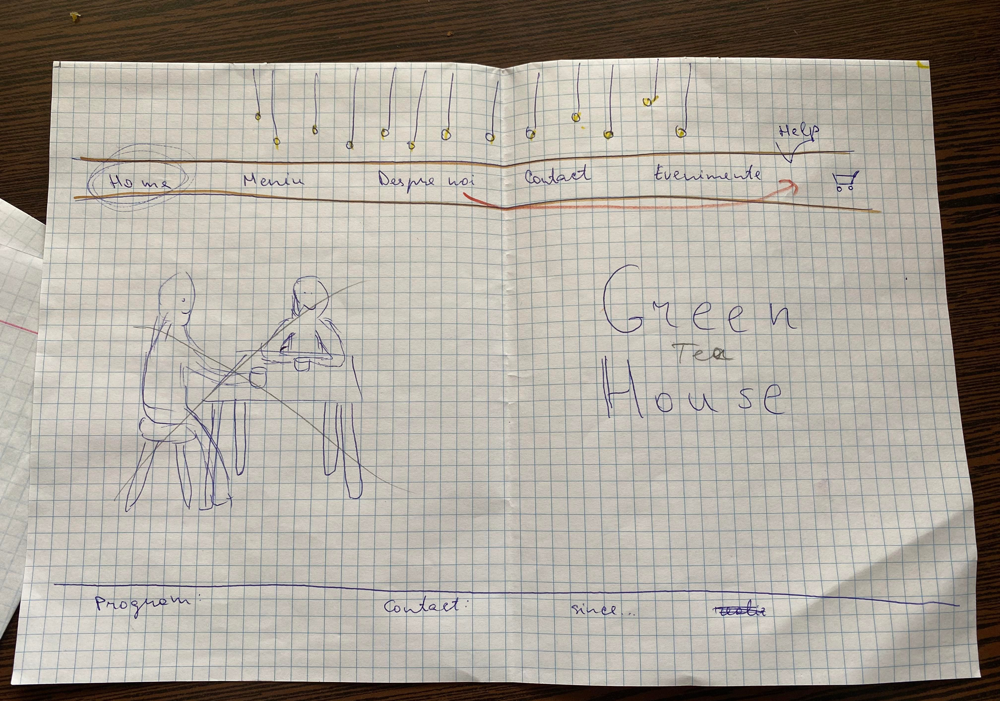
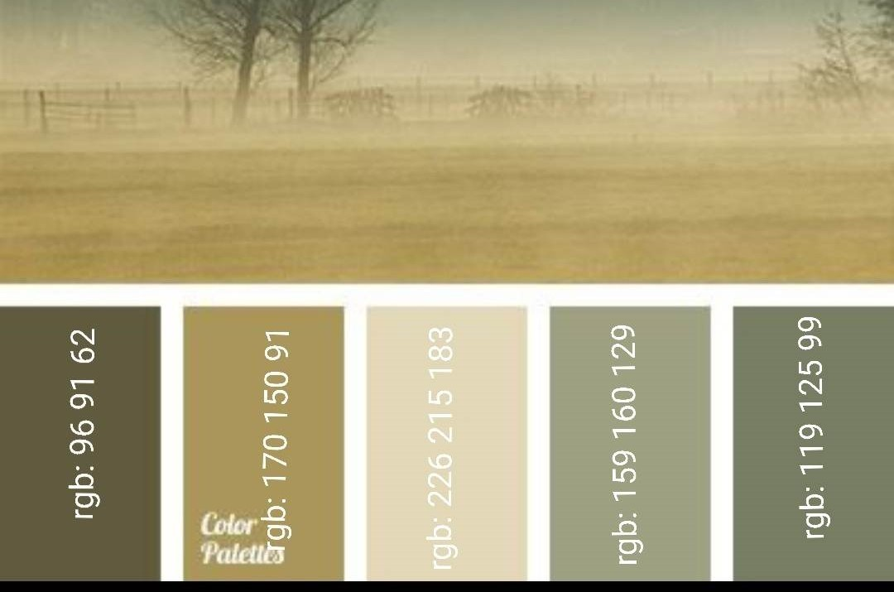
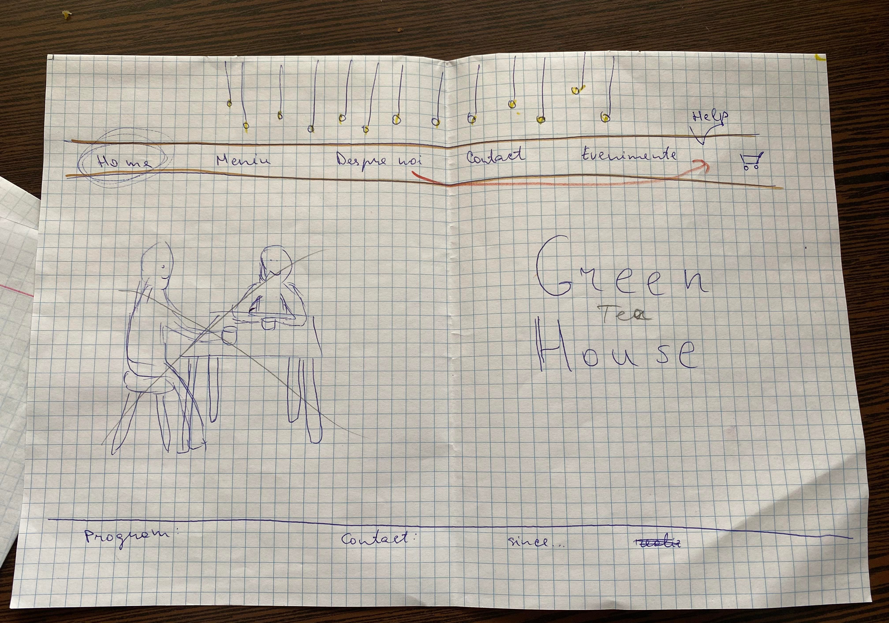
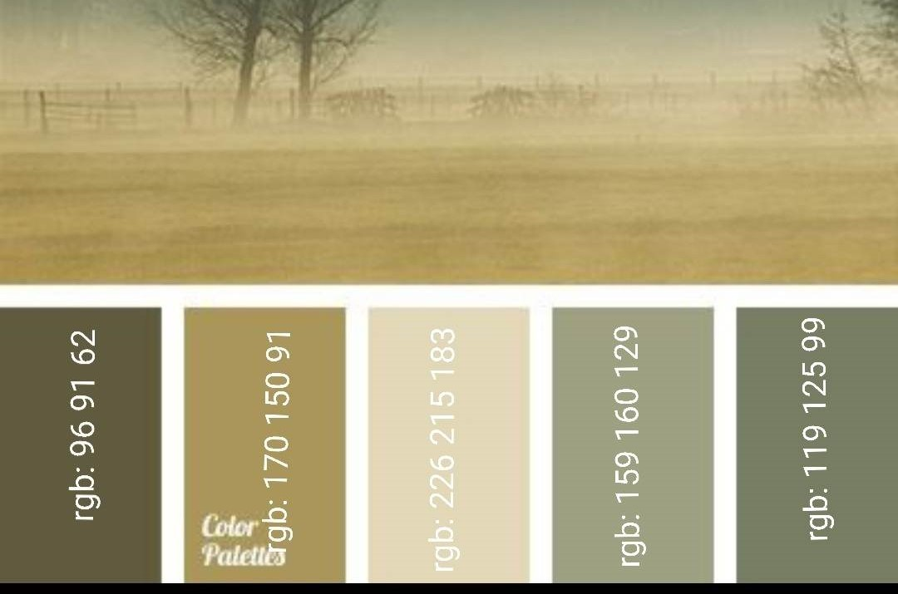
Dupa stabilirea paginilor componente si a unei game de culori reprezentative, am creat mock-ups ale aplicatiei, utilizand in acest scop platforma de design digital Figma Aceste mock-ups surprind aproape veridic aspectul final al paginilor si componentele existente, deservind ca model la implemnetarea concreta. In stabilirea unui design al fiecarei pagini, am avut ca scop realizarea unor pagini cu aspect minimal, usor de inteles si folosit, creand pagini avand un singur scop. Bara de meniu ramane elementul comun al tuturor paginilor, facilitand navigarea pe site. Desi simpliste, paginile sunt gandite astfel incat printr-un simplu click, un client sa poata accesa exact sectiunea de care are nevoie, fie ca este aceasta meniul, pagina de evenimente sau pagina despre.
La cele 6 pagini prezente in mock-ups: homepage, meniu, evenimente, despre, ajutor si cos de cumparaturi, am adaugat o a saptea pagina, rezervari, al carei scop este de a permite unui client sa isi rezerve un loc in ceainarie, consulatand lista cu locurile disponibile.
Pentru un touch de personalitate, am creat un logo al aplicatiei, folosind platforma Adobe Illustrator . Logo-ul reprezinta o frunza de ceai, in culorile site-ului, accetuand ideea de ceainarie.
Mock-ups ale site-ului:
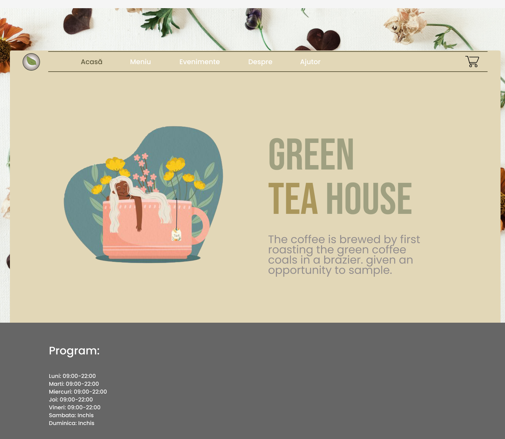 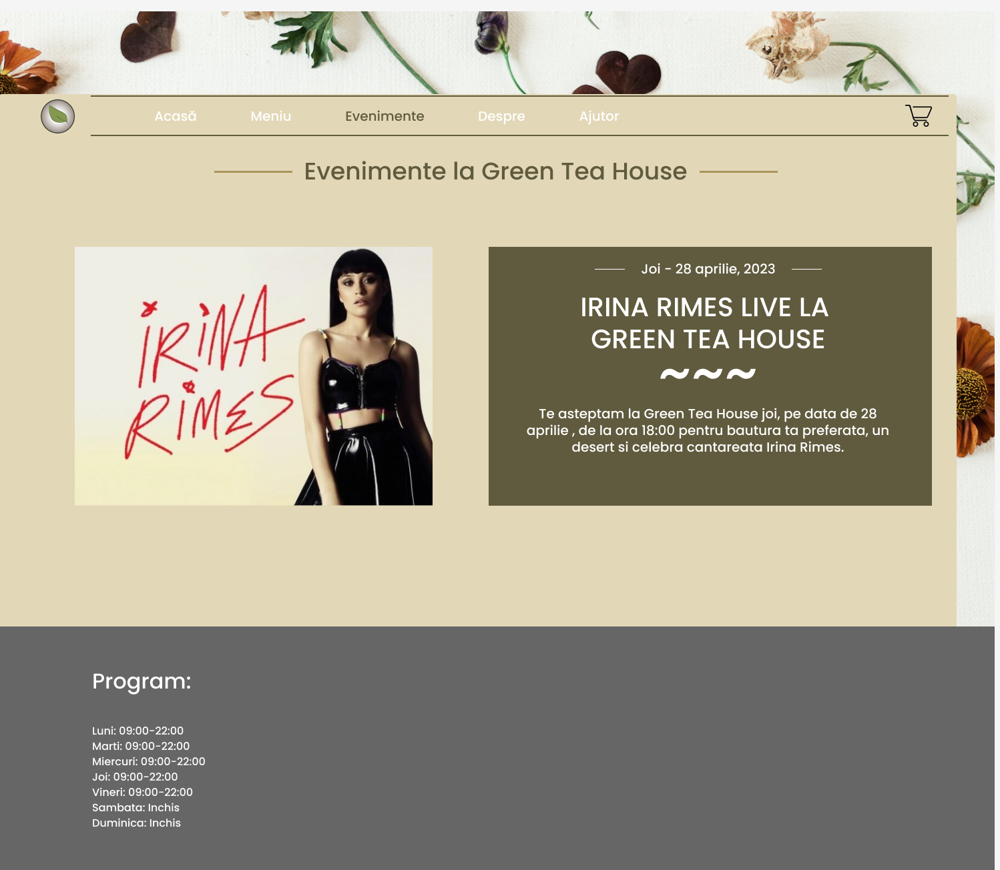 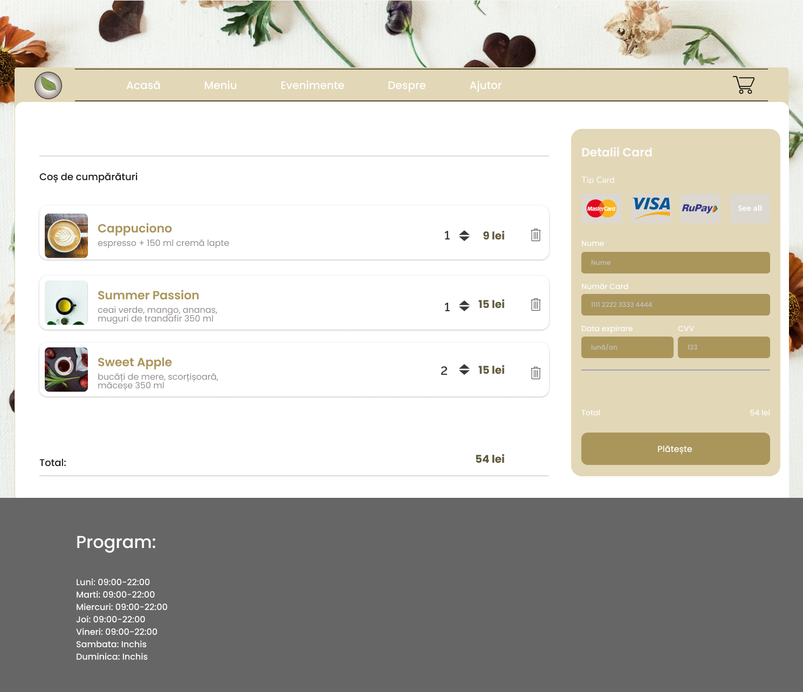 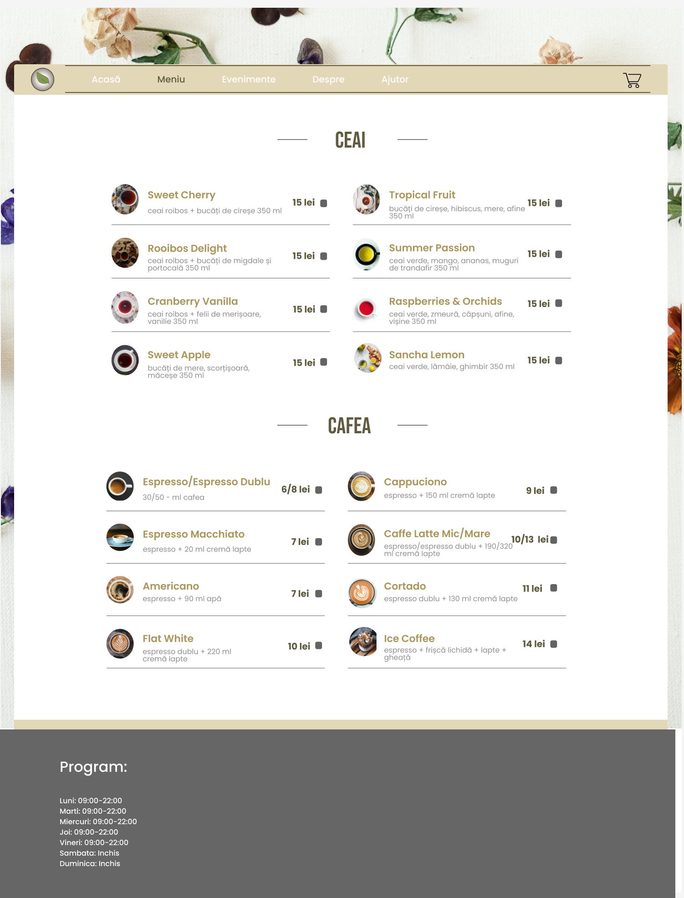 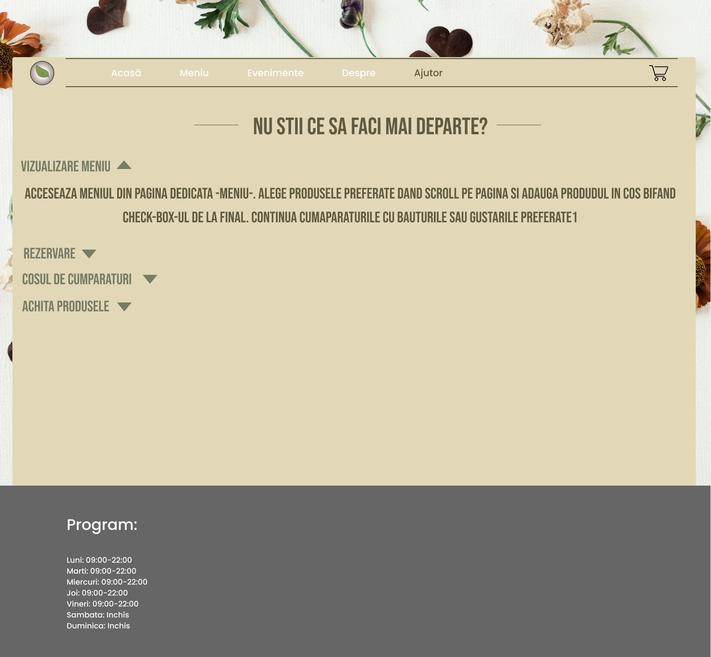 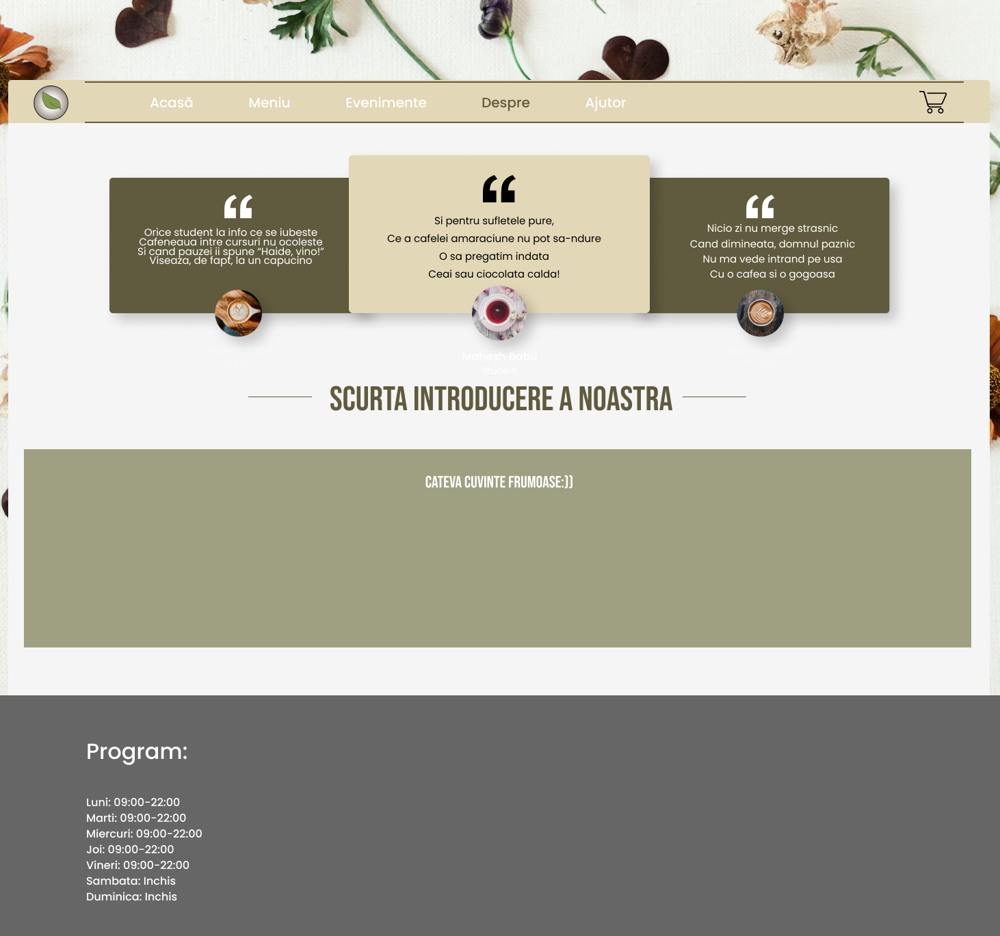Experienta utilizatorului
La accesarea aplicatiei, clientul va putea naviga pe cele sapte pagini fara a-si crea un cont de utilizator, vizualizarea meniului, evenimentelor, modificarea cosului de cumparaturi sau rezervarea unui loc in ceainarie fiind posibile fara existenta unui cont.
Pagina Acasa
Pagina "Acasa" este prima pagina implementata a aplicatiei. Scopul ei este unul de intampinare a clientilor, avand un aspect placut privirii. Pagina contine o imagine sugestiva si un citat. Existenta acestei pagini este strict pentru decorarea aplicatiei si pentru a introduce numele nostru - "Green Tea House"
Aspectul general al paginii ramane acelasi ca si in mock-up, singura schimbare fiind reprezentata de alegerea citatului.
Pagina Meniu
"Meniu" reprezinta, probabil, cea mai importanta pagina a aplicatiei. Aici clientului ii este pusa la alegere o varietatea de produse, de la ceaiuri, cafea, la nelipsitele sucuri si smoothie, dar mai ales nelipsitele gustari. Clientul poate consulta ingredientele si pretul produselor, dar si cantitatile. Daca isi doreste achizitionarea unei bauturi, tot ceea ce are de facut este sa apese butonul "+" fie o singura data, pentru achizitionarea unei singure portii, fie de mai multe ori. In cazul in care acesta isi doreste sa renunte la un produs, poate modifica cosul de cumparaturi din pagina dedicata.
Pagina Evenimente
Aceasta este pagina ce pune clientul la curent cu viitoarele urmatoarele evenimente ce vor avea loc: concerte, jocuri de grup, iesiri si chiar si anunturi privind ceainaria. Scopul paginii este unul informativ, fiind modul de comunicare, prin anunturi, cu clientii.
Pagina Despre
Asa cum si numele sugereaza, aceasta pagina contine informatii despre noi si despre aplicatie, de ce am ales proiectul si care este scopul nostru. Intr-un ton usor umoristic, pagina "Despre" introduce clientului echipa din spatele aplicatiei. Aspectul paginii ramane ca in mock-up
Pagina Ajutor
Scopul pagini este, asa cum este sugerat, de ajutor, ghidare pe site. Pagina contine indicatii despre navigarea pe site, informatii precum accesarea meniului sau cosul de cumparaturi. Aspectul sau ramane acelasi ca in mock-up, la care se adauga o imagine cu un mesaj catre clienti.
Pagina Rezervari
"Rezervari" vine in ajutorul atat al clientului ce doreste sa ocupe un loc in ceainarie cat si al "chelnerului" ce va sti cine si la ce masa a comandat anumite produse. Pagina contine o lista de mese cu numar de locuri aferent fiecareia. Daca doreste rezervarea unui anumit loc, clientul poate bifa checkbox-ul din dreptul locului dorit. Daca un loc nu este liber, acesta va fi marcat.
Aspectul paginii:
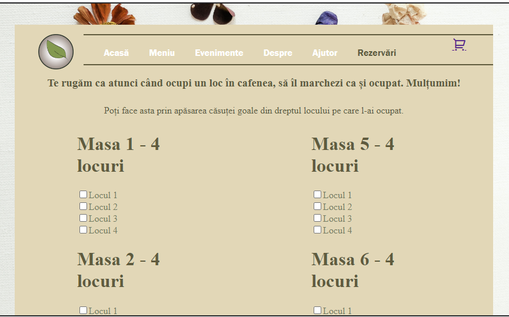Pagina Cos de cumparaturi
Reprezentata in partea dreapta a barei de navigare, printr-o imagine a unui carucior de cumparaturi, aceasta pagina are scopul de a retine produsele menite achizitionarii. Acestea sunt retinute intr-un tabel, in partea dreapta a ecranului. Pentru fiecare produs din cos, se va afisa imaginea pordusului, numele acestuia, cantitatea ce poate fi modificata si pretul. Daca un client doreste sa renunte la un produs, tot ceea ce trebuie sa faca este sa dea click pe iconita reprezentand un cos de gunoi si produsul va fi eliminat. La final, pretul total este recalculat. Tot aici, clientul poate achizitiona produsele prin plata cu cardul, dispunand de un formular specific. In cazul platilor online, este necesara introducerea datelor cardului bancar si apasarea butonului "PLATESTE". Aspectul paginii ramane asemanator cu cel din mock-up.
Caracterul responsive
Paginile sunt responsive, putand fi vizualizate atat de pe desktop cat si de pe telefon.
Aspectul paginilor pe telefon este:
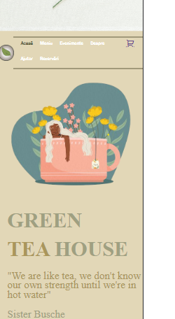 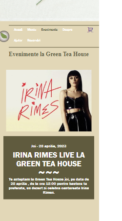
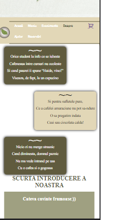
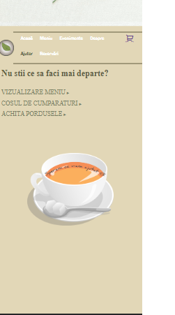
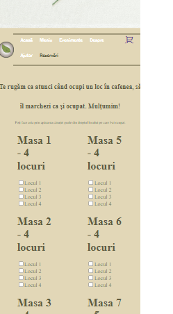
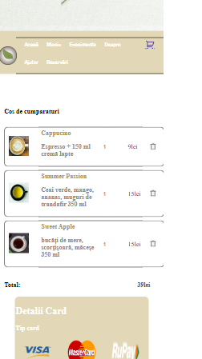
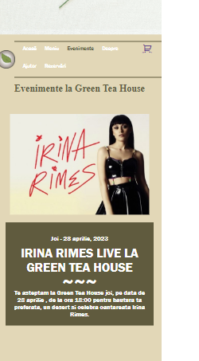
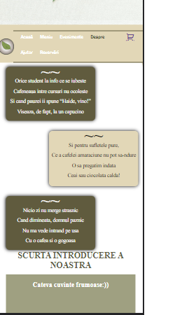
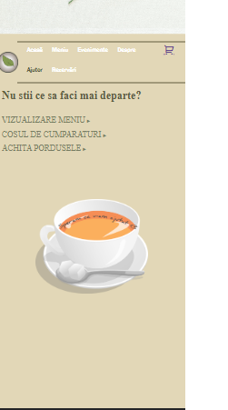
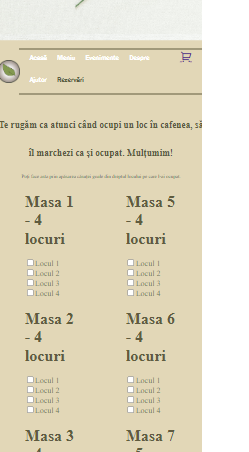
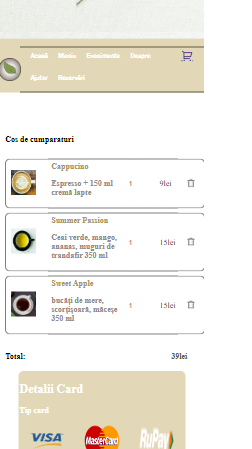
Resurse
Imaginile folosite pentru crearea meniului, a cosului de cumparaturi si pagina acasa au fost preluate de pe Unsplash, site de unde pot fi preluate imagini de calitate inalta fara grija acuzatiilor de copyright. Imaginea folosita pentru pagina de ajutor a fost preluata de pe Pixabay avand, de asemenea, licenta gratis. Alte imagini au fost preluate de pe Pinterest. Logo-urile utilizate la fomularul de plata, de pe pagina cosului de cumparaturi au fost preluate de pe Logos-World.net.